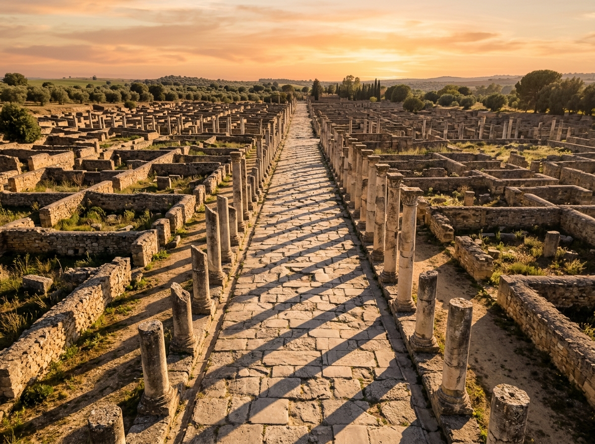
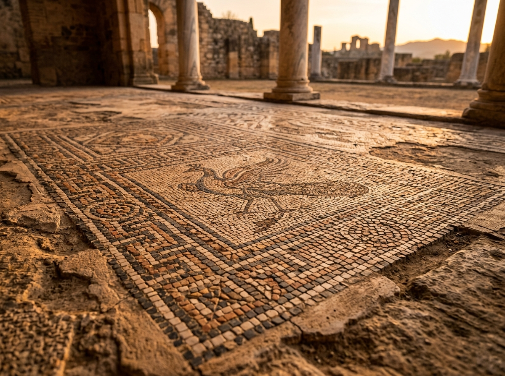

Itálica: La Primera Ciudad que Roma Fundó Fuera de Italia
En el año 206 antes de Cristo, tras aplastar a los cartagineses en la batalla de Ilipa, el general Publio Cornelio Escipión —el futuro Africano— se encontró con un problema logístico poco glorioso: cientos de sus veteranos, muchos de ellos heridos de gravedad, no estaban en condiciones de volver a Italia. En lugar de abandonarlos, Escipión les dio tierra en una colina junto al río Guadalquivir, en territorio de la Turdetania, y fundó allí un asentamiento al que llamó Itálica, en homenaje explícito a la patria que sus habitantes ya no podían pisar. Fue, según el consenso arqueológico, la primera ciudad que Roma levantó fuera del suelo itálico. Dos siglos y medio más tarde, esa colonia de convalecientes había producido dos de los emperadores más poderosos que tuvo Roma.
Una Ciudad para los Heridos de Ilipa
Itálica nació, literalmente, como una enfermería convertida en asentamiento permanente. No fue una colonia militar planificada desde Roma ni una ciudad conquistada y reconvertida: fue una solución de campaña que se volvió definitiva. Los veteranos itálicos se asentaron junto a una población turdetana preexistente, en un promontorio que dominaba el valle del Guadalquivir y que ofrecía control sobre las rutas hacia las minas de plata de Sierra Morena, una de las razones económicas reales detrás de la presencia romana en la región. Con el tiempo, la pequeña ciudad de veteranos fue absorbiendo población itálica y local por igual, y hacia el siglo I antes de Cristo ya contaba con un teatro construido bajo el reinado de Augusto, la obra civil más antigua que se conserva en el yacimiento.
Esa primera Itálica —la que los arqueólogos llaman Vetus Urbs, la ciudad vieja— se asentaba sobre lo que hoy es el municipio de Santiponce, y por eso apenas puede excavarse: una población moderna vive encima. Fue, sin embargo, en esa ciudad vieja donde nacieron los dos hombres que cambiarían para siempre el mapa del poder romano.
La Nova Urbs: la Ciudad que Adriano Quiso que Fuera Roma
Trajano nació en Itálica hacia el año 53 después de Cristo y llegó al trono imperial en el 98, convirtiéndose en el primer emperador romano nacido fuera de Italia. Veintitrés años después lo sucedería su pariente y pupilo Adriano, nacido también en la ciudad hacia el año 76. Bajo Adriano, Itálica dejó de ser una colonia provincial modesta y se convirtió oficialmente en Colonia Aelia Augusta Italica, con el rango jurídico más alto que Roma podía conceder a una ciudad. Y Adriano no se conformó con el título: ordenó construir, junto a la vieja ciudad, una ampliación monumental completamente nueva, la Nova Urbs, trazada sobre una retícula regular de calles pavimentadas y pensada para alojar a una elite que viviera a la altura de haber dado dos emperadores a Roma.

Las domus de la Nova Urbs eran mansiones de patio central, decoradas con mármoles importados y suelos de mosaico que hoy suman cerca de veinte conjuntos conservados en el yacimiento. La Casa del Planetario debe su nombre a un mosaico hexagonal que representa a las siete divinidades planetarias asociadas a los días de la semana —Saturno, Sol, Luna, Marte, Mercurio, Júpiter y Venus—, una de las pocas representaciones completas de este tipo que se conservan del mundo romano. La Casa de Neptuno conserva un mosaico marino poblado de animales acuáticos, y la llamada Casa de los Pájaros da nombre a un pavimento con más de treinta especies de aves representadas con precisión casi ornitológica. En el Museo Arqueológico de Sevilla se conserva además la Venus de Itálica, una escultura en mármol de 211 centímetros que representa a Afrodita Anadiómena emergiendo del agua, tallada en tiempos de Adriano y hoy una de las piezas más valiosas del arte romano hallado en Hispania.

Un Anfiteatro Más Grande que la Propia Ciudad
El monumento que domina hoy el yacimiento es su anfiteatro, terminado hacia el año 138 y construido también bajo el impulso de Adriano. Con capacidad estimada para veinticinco mil espectadores repartidos en tres niveles de gradas, se cuenta entre los más grandes de todo el Imperio romano, detrás únicamente del Coliseo de Roma y de un puñado de anfiteatros italianos. La cifra resulta casi absurda si se compara con el tamaño real de la ciudad: ni siquiera en su momento de mayor esplendor la población de Itálica se acercaba a las veinticinco mil personas que su anfiteatro podía albergar. La explicación más aceptada es que el edificio no se construyó solo para los itálicos, sino para atraer a espectadores de toda la Bética, la provincia romana que hoy ocupa buena parte de Andalucía, convirtiendo a Itálica en un centro de espectáculos de escala regional.
En el centro de la arena, bajo el nivel del suelo, se conserva un foso rectangular —la fossa bestiaria— que se usaba para el manejo de fieras y la maquinaria escénica de los combates, comunicado con el exterior por galerías subterráneas. La solidez de la estructura, pese a más de dieciocho siglos de exposición, ha sido suficiente para que el anfiteatro sirviera de escenario a rodajes modernos, entre ellos la serie Juego de Tronos, donde hizo las veces del Foso de los Dragones de Desembarco del Rey: un anfiteatro romano real interpretando, sin apenas necesidad de decorado, la ruina de un anfiteatro ficticio.
El Circo Escondido Bajo un Pueblo Moderno
Durante casi dos mil años, Itálica guardó un secreto que ni los propios arqueólogos sospechaban a esa escala. En 2023, un equipo de la Universidad de Sevilla dirigido por Alejandro Jiménez Hernández, con apoyo del Instituto de geofísica de la Universidad de Granada, utilizó georradar y tomografía de resistividad eléctrica para rastrear el subsuelo al este del yacimiento, junto al teatro. Lo que encontraron fue un circo romano —un hipódromo para carreras de cuadrigas— de 532 metros de longitud máxima y entre 140 y 155 metros de anchura, con capacidad estimada para ochenta mil espectadores: más aforo que el que tiene hoy el estadio Santiago Bernabéu.
"Solo el Circo Máximo de Roma superaba en tamaño a este circo, que sería el mayor que Roma construyó fuera de Italia, por delante incluso de los de Mérida y Tarragona."
— Equipo de investigación de la Universidad de Sevilla, hallazgo geofísico del circo de Itálica, 2023
El circo permanece enterrado bajo terrenos del actual Santiponce, y su existencia solo se confirmó por radar: nadie lo ha excavado todavía. Es un recordatorio incómodo de cuánto de la Itálica real sigue literalmente bajo tierra, oculto debajo de una localidad moderna que convive, sin saberlo del todo, con uno de los edificios de espectáculos más grandes que Roma construyó jamás fuera de su propio suelo.
De Cuna de Emperadores a Pueblo Fantasma
La paradoja de Itálica es que su momento de mayor ambición arquitectónica fue también el principio de su declive. La Nova Urbs de Adriano se diseñó para una población que nunca terminó de llegar: grandes extensiones de la retícula urbana quedaron a medio construir o con parcelas vacías, y varias domus muestran señales de haberse abandonado o reocupado de forma precaria ya en el siglo III. El cambio de curso del río Guadalquivir, que se fue alejando del núcleo urbano original, complicó el comercio fluvial que había sostenido a la ciudad, y Hispalis —la actual Sevilla, río abajo y mejor conectada— fue absorbiendo el papel administrativo y comercial que Itálica nunca llegó a consolidar del todo. Con el fin del Imperio romano de Occidente y las sucesivas ocupaciones visigoda y musulmana de la península, la Nova Urbs quedó despoblada casi por completo, mientras que la Vetus Urbs original sobrevivió, reducida, como el germen de lo que hoy es Santiponce.
Una Ciudad Construida para la Posteridad
Itálica nunca volvió a ser lo que fue bajo Adriano, y esa es, en cierto modo, su mayor virtud arqueológica: al no seguir creciendo ni construyéndose encima durante los siglos siguientes, buena parte de la Nova Urbs quedó congelada tal como la dejó el siglo II, sin las superposiciones medievales y modernas que borraron tantas otras ciudades romanas de la Península. Lo que hoy camina un visitante entre las columnas y los mosaicos no es una reconstrucción ni una interpretación: es, con pocas excepciones, la traza original de la ciudad que produjo a los dos emperadores que llevaron el poder de Roma, por primera vez, más allá de las fronteras de Italia.
"Itálica demostró, antes que ninguna otra ciudad, que el Imperio ya no necesitaba nacer en Roma para gobernar Roma."
— Julián González, Itálica y los emperadores hispanos, Universidad de Sevilla
"Una colonia de veteranos heridos que ya no podían volver a casa terminó dando a Roma dos de sus emperadores más poderosos, y un anfiteatro para veinticinco mil personas en una ciudad que nunca tuvo tantos habitantes."
Itálica no es solo la primera ciudad que Roma fundó fuera de Italia: es la prueba de que, para el año 100 después de Cristo, el centro del poder romano ya no estaba necesariamente en Roma. Hoy, entre columnas sin terminar y un circo todavía enterrado, sigue contando esa historia.
Fuentes y Referencias
- Julián González — Itálica y los emperadores hispanos, Universidad de Sevilla
- Pilar León-Castro Alonso — Itálica, Real Academia de la Historia
- Jesús Salas Álvarez — Itálica, cuna de emperadores romanos, Universidad Complutense de Madrid
- Conjunto Arqueológico de Itálica — Junta de Andalucía, ficha oficial del yacimiento
- Alejandro Jiménez Hernández (Universidad de Sevilla) — estudio geofísico del circo romano de Itálica, 2023
- Spain.info / Turespaña — ficha de destino "Ruinas romanas de Santiponce"
Continúa leyendo
El Acueducto de Segovia: 2.000 Años sin una Gota de Argamasa →